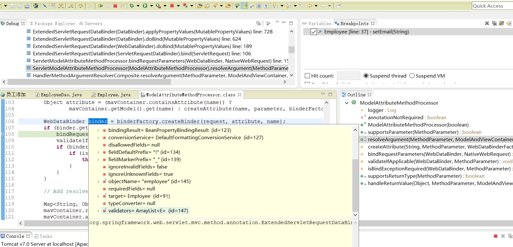

数据转换&数据格式化&数据校验
SpringMVC 封装自定义类型对象
javabean 要和页面提交的数据一一绑定
1),数据绑定期间的数据类型转换
2),数据绑定期间的数据格式化问题，比如提交日期格式转换
3),数据校验? 我们提交的数据必须是合法的。

Object attribute = (mavContainer.containsAttribute(name)) ?
mavContainer.getModel().get(name) : createAttribute(name, parameter, binderFactory, request);
WebDataBinder binder = binderFactory.createBinder(request, attribute, name);
if (binder.getTarget() != null) {
将页面提交过来的数据封装到Javabean的属性中
bindRequestParameters(binder, request);
validateIfApplicable(binder, parameter);
if (binder.getBindingResult().hasErrors()) {
if (isBindExceptionRequired(binder, parameter)) {
throw new BindException(binder.getBindingResult());
}
}
}

ConversionService converters =
@org.springframework.format.annotation.DateTimeFormat java.lang.Long -> java.lang.String: org.springframework.format.datetime.DateTimeFormatAnnotationFormatterFactory@1e8a23bf,@org.springframework.format.annotation.NumberFormat java.lang.Long -> java.lang.String: org.springframework.format.number.NumberFormatAnnotationFormatterFactory@17bdecf1
@org.springframework.format.annotation.DateTimeFormat java.time.LocalDate -> java.lang.String: org.springframework.format.datetime.standard.Jsr310DateTimeFormatAnnotationFormatterFactory@64b829f1,java.time.LocalDate -> java.lang.String : org.springframework.format.datetime.standard.TemporalAccessorPrinter@7375d0b7
@org.springframework.format.annotation.DateTimeFormat java.time.LocalDateTime -> java.lang.String: org.springframework.format.datetime.standard.Jsr310DateTimeFormatAnnotationFormatterFactory@64b829f1,java.time.LocalDateTime -> java.lang.String : org.springframework.format.datetime.standard.TemporalAccessorPrinter@3c70e767
@org.springframework.format.annotation.DateTimeFormat java.time.LocalTime -> java.lang.String: org.springframework.format.datetime.standard.Jsr310DateTimeFormatAnnotationFormatterFactory@64b829f1,java.time.LocalTime -> java.lang.String : org.springframework.format.datetime.standard.TemporalAccessorPrinter@448f2d52
@org.springframework.format.annotation.DateTimeFormat java.time.OffsetDateTime -> java.lang.String: org.springframework.format.datetime.standard.Jsr310DateTimeFormatAnnotationFormatterFactory@64b829f1,java.time.OffsetDateTime -> java.lang.String : org.springframework.format.datetime.standard.TemporalAccessorPrinter@f65351
@org.springframework.format.annotation.DateTimeFormat java.time.OffsetTime -> java.lang.String: org.springframework.format.datetime.standard.Jsr310DateTimeFormatAnnotationFormatterFactory@64b829f1,java.time.OffsetTime -> java.lang.String : org.springframework.format.datetime.standard.TemporalAccessorPrinter@7f9a65ae
@org.springframework.format.annotation.DateTimeFormat java.time.ZonedDateTime -> java.lang.String: org.springframework.format.datetime.standard.Jsr310DateTimeFormatAnnotationFormatterFactory@64b829f1,java.time.ZonedDateTime -> java.lang.String : org.springframework.format.datetime.standard.TemporalAccessorPrinter@314d7cc8
@org.springframework.format.annotation.DateTimeFormat java.util.Calendar -> java.lang.String: org.springframework.format.datetime.DateTimeFormatAnnotationFormatterFactory@1e8a23bf
@org.springframework.format.annotation.DateTimeFormat java.util.Date -> java.lang.String: org.springframework.format.datetime.DateTimeFormatAnnotationFormatterFactory@1e8a23bf
@org.springframework.format.annotation.NumberFormat java.lang.Double -> java.lang.String: org.springframework.format.number.NumberFormatAnnotationFormatterFactory@17bdecf1
@org.springframework.format.annotation.NumberFormat java.lang.Float -> java.lang.String: org.springframework.format.number.NumberFormatAnnotationFormatterFactory@17bdecf1
@org.springframework.format.annotation.NumberFormat java.lang.Integer -> java.lang.String: org.springframework.format.number.NumberFormatAnnotationFormatterFactory@17bdecf1
@org.springframework.format.annotation.NumberFormat java.lang.Short -> java.lang.String: org.springframework.format.number.NumberFormatAnnotationFormatterFactory@17bdecf1
@org.springframework.format.annotation.NumberFormat java.math.BigDecimal -> java.lang.String: org.springframework.format.number.NumberFormatAnnotationFormatterFactory@17bdecf1
@org.springframework.format.annotation.NumberFormat java.math.BigInteger -> java.lang.String: org.springframework.format.number.NumberFormatAnnotationFormatterFactory@17bdecf1
java.lang.Boolean -> java.lang.String : org.springframework.core.convert.support.ObjectToStringConverter@168d1d65
java.lang.Character -> java.lang.Number : org.springframework.core.convert.support.CharacterToNumberFactory@6b1fa83a
java.lang.Character -> java.lang.String : org.springframework.core.convert.support.ObjectToStringConverter@43fbbeba
java.lang.Enum -> java.lang.String : org.springframework.core.convert.support.EnumToStringConverter@21cbfaa7
java.lang.Long -> java.util.Calendar : org.springframework.format.datetime.DateFormatterRegistrar$LongToCalendarConverter@20643f3d
java.lang.Long -> java.util.Date : org.springframework.format.datetime.DateFormatterRegistrar$LongToDateConverter@1051929
java.lang.Number -> java.lang.Character : org.springframework.core.convert.support.NumberToCharacterConverter@6c39b2db
java.lang.Number -> java.lang.Number : org.springframework.core.convert.support.NumberToNumberConverterFactory@1cc0b8a5
java.lang.Number -> java.lang.String : org.springframework.core.convert.support.ObjectToStringConverter@3a97a6c0
java.lang.String -> @org.springframework.format.annotation.DateTimeFormat java.lang.Long: org.springframework.format.datetime.DateTimeFormatAnnotationFormatterFactory@1e8a23bf,java.lang.String -> @org.springframework.format.annotation.NumberFormat java.lang.Long: org.springframework.format.number.NumberFormatAnnotationFormatterFactory@17bdecf1
java.lang.String -> @org.springframework.format.annotation.DateTimeFormat java.time.LocalDate: org.springframework.format.datetime.standard.Jsr310DateTimeFormatAnnotationFormatterFactory@64b829f1,java.lang.String -> java.time.LocalDate: org.springframework.format.datetime.standard.TemporalAccessorParser@bd7604c
java.lang.String -> @org.springframework.format.annotation.DateTimeFormat java.time.LocalDateTime: org.springframework.format.datetime.standard.Jsr310DateTimeFormatAnnotationFormatterFactory@64b829f1,java.lang.String -> java.time.LocalDateTime: org.springframework.format.datetime.standard.TemporalAccessorParser@c1535a5
java.lang.String -> @org.springframework.format.annotation.DateTimeFormat java.time.LocalTime: org.springframework.format.datetime.standard.Jsr310DateTimeFormatAnnotationFormatterFactory@64b829f1,java.lang.String -> java.time.LocalTime: org.springframework.format.datetime.standard.TemporalAccessorParser@615d6393
java.lang.String -> @org.springframework.format.annotation.DateTimeFormat java.time.OffsetDateTime: org.springframework.format.datetime.standard.Jsr310DateTimeFormatAnnotationFormatterFactory@64b829f1,java.lang.String -> java.time.OffsetDateTime: org.springframework.format.datetime.standard.TemporalAccessorParser@256be6f7
java.lang.String -> @org.springframework.format.annotation.DateTimeFormat java.time.OffsetTime: org.springframework.format.datetime.standard.Jsr310DateTimeFormatAnnotationFormatterFactory@64b829f1,java.lang.String -> java.time.OffsetTime: org.springframework.format.datetime.standard.TemporalAccessorParser@7295f05c
java.lang.String -> @org.springframework.format.annotation.DateTimeFormat java.time.ZonedDateTime: org.springframework.format.datetime.standard.Jsr310DateTimeFormatAnnotationFormatterFactory@64b829f1,java.lang.String -> java.time.ZonedDateTime: org.springframework.format.datetime.standard.TemporalAccessorParser@3b06c089
java.lang.String -> @org.springframework.format.annotation.DateTimeFormat java.util.Calendar: org.springframework.format.datetime.DateTimeFormatAnnotationFormatterFactory@1e8a23bf
java.lang.String -> @org.springframework.format.annotation.DateTimeFormat java.util.Date: org.springframework.format.datetime.DateTimeFormatAnnotationFormatterFactory@1e8a23bf
java.lang.String -> @org.springframework.format.annotation.NumberFormat java.lang.Double: org.springframework.format.number.NumberFormatAnnotationFormatterFactory@17bdecf1
java.lang.String -> @org.springframework.format.annotation.NumberFormat java.lang.Float: org.springframework.format.number.NumberFormatAnnotationFormatterFactory@17bdecf1
java.lang.String -> @org.springframework.format.annotation.NumberFormat java.lang.Integer: org.springframework.format.number.NumberFormatAnnotationFormatterFactory@17bdecf1
java.lang.String -> @org.springframework.format.annotation.NumberFormat java.lang.Short: org.springframework.format.number.NumberFormatAnnotationFormatterFactory@17bdecf1
java.lang.String -> @org.springframework.format.annotation.NumberFormat java.math.BigDecimal: org.springframework.format.number.NumberFormatAnnotationFormatterFactory@17bdecf1
java.lang.String -> @org.springframework.format.annotation.NumberFormat java.math.BigInteger: org.springframework.format.number.NumberFormatAnnotationFormatterFactory@17bdecf1
java.lang.String -> java.lang.Boolean : org.springframework.core.convert.support.StringToBooleanConverter@81d6cb2
java.lang.String -> java.lang.Character : org.springframework.core.convert.support.StringToCharacterConverter@5a6730c3
java.lang.String -> java.lang.Enum : org.springframework.core.convert.support.StringToEnumConverterFactory@3703da05
java.lang.String -> java.lang.Number : org.springframework.core.convert.support.StringToNumberConverterFactory@19e6d177
java.lang.String -> java.time.Instant: org.springframework.format.datetime.standard.InstantFormatter@40cb5984
java.lang.String -> java.util.Locale : org.springframework.core.convert.support.StringToLocaleConverter@42d06ad0
java.lang.String -> java.util.Properties : org.springframework.core.convert.support.StringToPropertiesConverter@153217b4
java.lang.String -> java.util.UUID : org.springframework.core.convert.support.StringToUUIDConverter@2a15b837
java.time.Instant -> java.lang.String : org.springframework.format.datetime.standard.InstantFormatter@40cb5984
java.time.ZoneId -> java.util.TimeZone : org.springframework.core.convert.support.ZoneIdToTimeZoneConverter@1dc26a19
java.util.Calendar -> java.lang.Long : org.springframework.format.datetime.DateFormatterRegistrar$CalendarToLongConverter@512194da
java.util.Calendar -> java.util.Date : org.springframework.format.datetime.DateFormatterRegistrar$CalendarToDateConverter@4bbce350
java.util.Date -> java.lang.Long : org.springframework.format.datetime.DateFormatterRegistrar$DateToLongConverter@3a6d4334
java....